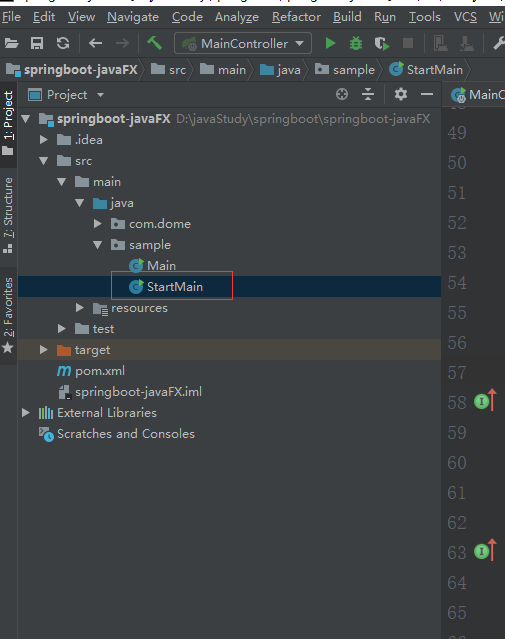

创建基于maven的javaFx+springboot项目有两种方式，第一种为通过非编码的方式来设计UI集成springboot；第二种为分离用户界面（UI）和后端逻辑集成springboot，其中用户界面为fxml文件。
maven依赖
<dependency>
<groupId>org.springframework.boot</groupId>
<artifactId>spring-boot-starter-actuator</artifactId>
<version>${spring.boot.version}</version>
</dependency>
<dependency>
<groupId>org.springframework.boot</groupId>
<artifactId>spring-boot-starter</artifactId>
<version>${spring.boot.version}</version>
</dependency>
<dependency>
<groupId>de.roskenet</groupId>
<artifactId>springboot-javafx-support</artifactId>
<version>${springboot-javafx-support.version}</version>
</dependency> 创建StartMain类，并继承Application
import javafx.application.Application;
import javafx.geometry.Insets;
import javafx.scene.Group;
import javafx.scene.Scene;
import javafx.scene.control.Button;
import javafx.scene.control.Label;
import javafx.scene.layout.GridPane;
import javafx.scene.layout.HBox;
import javafx.stage.Stage;
import org.springframework.boot.CommandLineRunner;
import org.springframework.boot.SpringApplication;
import java.util.Objects;
import java.util.function.Consumer;
/**
* maven构建JavaFX项目启动类
*/
public class StartMain extends Application implements CommandLineRunner, Consumer<Stage> {
/**
* 窗口启动接口，原理：
* 1. run(String... args)中给springStartMain赋值
* 2. start(Stage primaryStage)中调用了springStartMain来操作primaryStage
* 3. 而springStartMain实际上是spring管理的StartMain一个对象，因此accept方法中可以操作spring管理的任何对象
*/
private static Consumer<Stage> springStartMain;
private final Button btnStart = new Button("开 始");
@Override
public void accept(Stage stage) {
final GridPane gridPane = new GridPane();
gridPane.setPrefWidth(700);
gridPane.setPadding(new Insets(10, 10, 10, 10));
gridPane.setVgap(10);
gridPane.setHgap(10);
btnStart.setStyle("-fx-padding: 10;-fx-end-margin:20;");
HBox hBox1 = new HBox();
hBox1.getChildren().addAll(btnStart);
hBox1.setSpacing(20);
gridPane.addRow(2, new Label(), hBox1);
//页面
Group root = new Group();
Scene scene = new Scene(root, 720, 500);
scene.setRoot(gridPane);
//设置标题
stage.setTitle("Hello World");
//stage的标题将会是hello
stage.setScene(scene);
stage.show();
}
@Override
public void start(Stage primaryStage) throws Exception {
springStartMain.accept(primaryStage);
}
@Override
public void run(String... args) throws Exception {
springStartMain = Objects.requireNonNull(this);
}
public static void main(String[] args) {
//启动spring-boot
SpringApplication.run(StartMain.class, args);
//启动窗口
Application.launch(args);
}
}项目结构如下：
